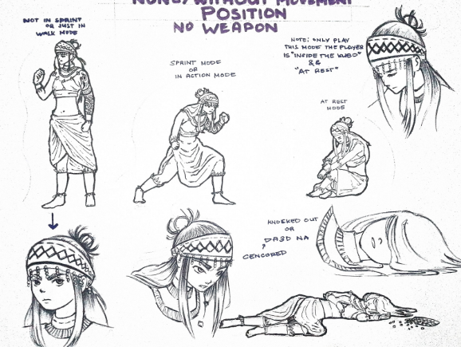
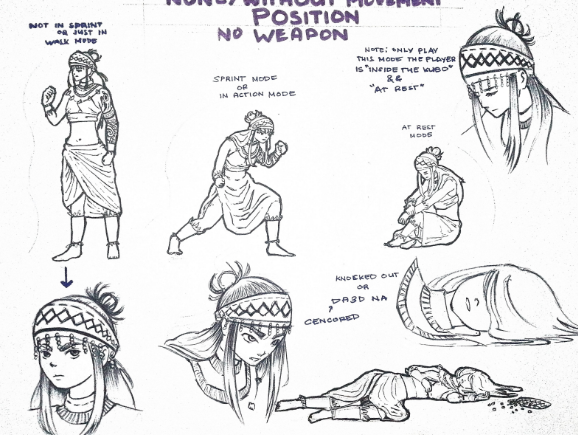

TEAM HIRAYA
We are a small indie team driven by imagination and purpose — creating games, animation, art, and more. Rooted in the meaning of Hiraya — "the fruit of one's hopes and dreams" — our work reflects a balance of vision, discipline, and respect. This is where creativity grows, ideas take shape, and dreams find their form.
ENGKANTO
Game In Development!
 

Engkanto is a 2D action adventure game inspired by Team Cherry Hollow knight and Hollow knight: Silksong, reimagined through filipino setting, Set in a dark, mysterious world filled with creatures from Philippine mythology, the game blends exploration, combat, and storytelling into a deeply atmospheric experience.
You play as Laurel, a young girl who mysteriously wakes up in an unfamiliar world teeming with spirits, gods, monsters. Armed only with her arnis, Laurel must journey across diverse regions, uncover the secrets of the land, and find a way back to the real world.
Throughout her adventure, Laurel encounters various characters who speak in different Filipino dialects, each offering fragments of lore, guidance, and challenges that deepen the world's mystery. The game emphasizes exploration, fast paced combat, and emotional storytelling, inviting players to uncover the truth behind Laurel's presence in this strange land and the hidden history of the Engkanto word itself.